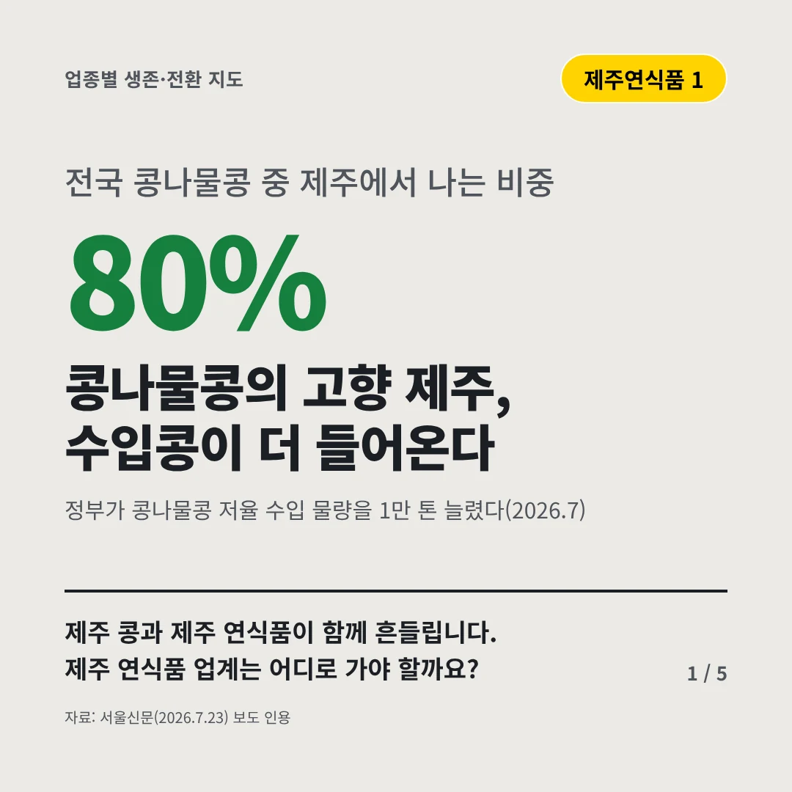
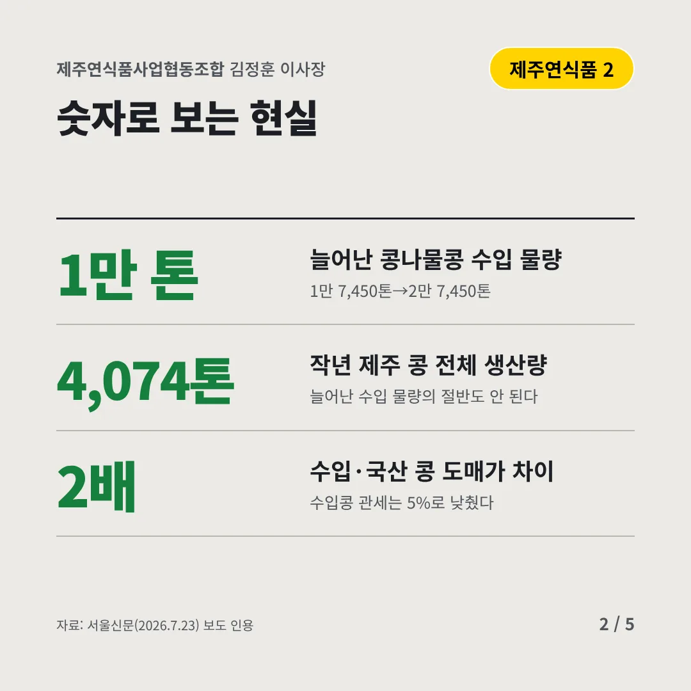
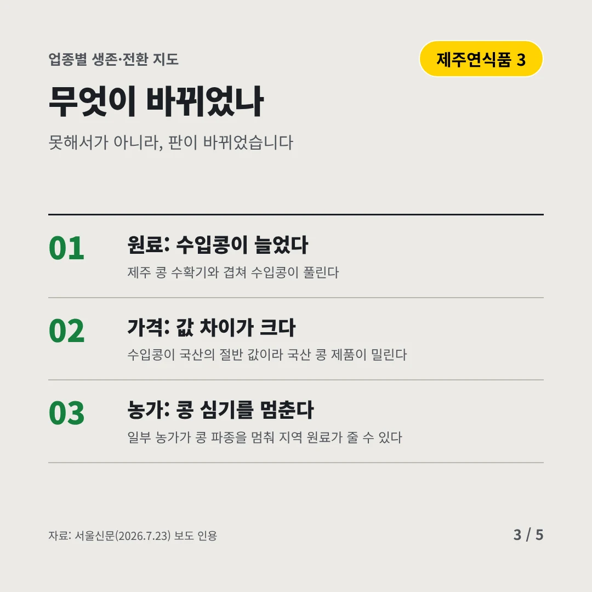
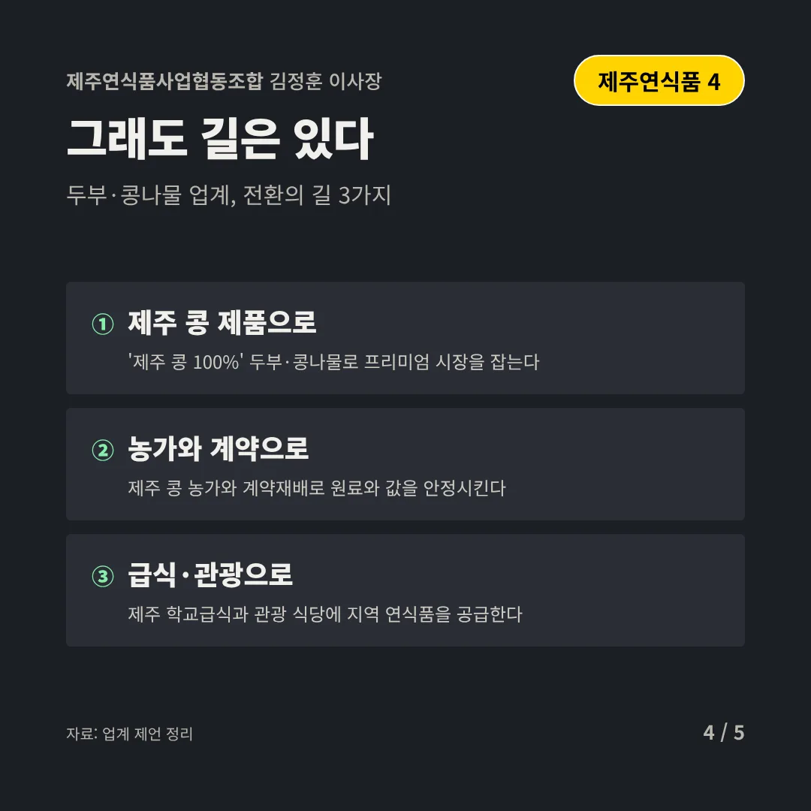
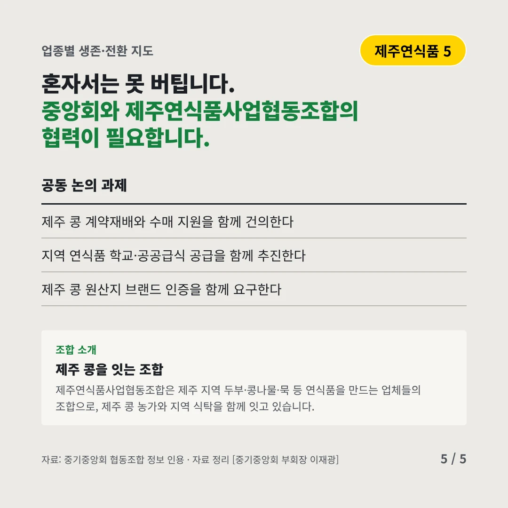
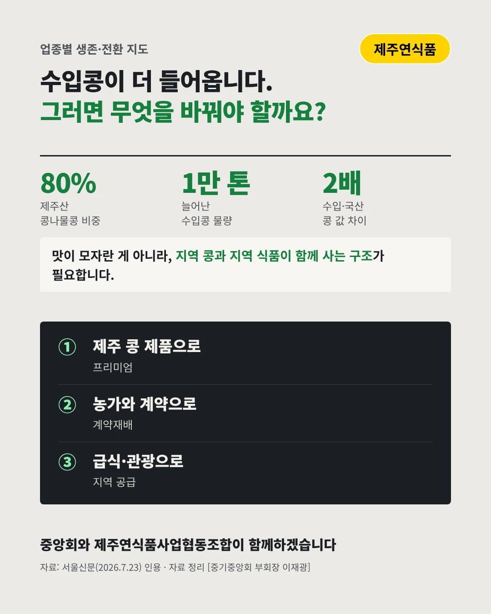

제주연식품사업협동조합
콩나물콩의 고향 제주, 수입콩이 더 들어온다
80% 전국 콩나물콩 중 제주에서 나는 비중






제주 콩과 제주 연식품이 함께 흔들립니다. 제주 연식품 업계는 어디로 가야 할까요?
숫자로 보는 현실
- 1만 톤늘어난 콩나물콩 수입 물량1만 7,450톤→2만 7,450톤
- 4,074톤작년 제주 콩 전체 생산량늘어난 수입 물량의 절반도 안 된다
- 2배수입·국산 콩 도매가 차이수입콩 관세는 5%로 낮췄다
무엇이 바뀌었나
- 원료: 수입콩이 늘었다제주 콩 수확기와 겹쳐 수입콩이 풀린다
- 가격: 값 차이가 크다수입콩이 국산의 절반 값이라 국산 콩 제품이 밀린다
- 농가: 콩 심기를 멈춘다일부 농가가 콩 파종을 멈춰 지역 원료가 줄 수 있다
그래도 길은 있다
- 제주 콩 제품으로'제주 콩 100%' 두부·콩나물로 프리미엄 시장을 잡는다
- 농가와 계약으로제주 콩 농가와 계약재배로 원료와 값을 안정시킨다
- 급식·관광으로제주 학교급식과 관광 식당에 지역 연식품을 공급한다
한 장 요약

조합 소개
제주연식품사업협동조합은 제주 지역 두부·콩나물·묵 등 연식품을 만드는 업체들의 조합으로, 제주 콩 농가와 지역 식탁을 함께 잇고 있습니다.
자료: 서울신문(2026.7.23)